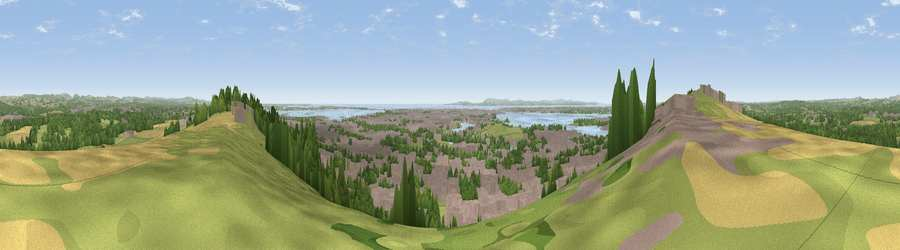

Viewpoint near Purbrook
#3178 in England · top 10% of its area beats it · near PurbrookThe view, rendered

A 360° render of this exact spot computed from the terrain model, tree cover and land cover — summer colours, afternoon light, calibrated against photographs of famous viewpoints. Real trees, hedges and buildings will differ in detail.
The panorama
Grey silhouette: terrain skyline in each direction (720 bearings, Earth curvature and refraction included). Dashed green: skyline with trees (+15 m) and buildings (+8 m) as obstacles. Blue strip: how far the ground is visible on each bearing.
Where the view opens
Wedge length = distance to the farthest visible ground on that bearing (vegetation-aware). Rings at 10, 25 and 50 km.
What fills the view
39% built-up · 25% grassland · 21% woodland · 7% water · 6% cropland
Angular shares of the visible panorama (visual magnitude), not map area. Landscape diversity 0.62 (0–1 Shannon).
Key numbers
More beautiful places nearby
The staircase of upgrades: each row has a higher view potential than everything closer. Driving times are estimates from straight-line distance, calibrated against real road routing — check an actual route before setting out.
| Place | Direction | Drive | Score |
|---|---|---|---|
| Viewpoint near Southwick | W · 1 km | ~2 min | 76.6 |
| Viewpoint near Buriton | NNE · 15 km | ~27 min | 80.0 |
| Beacon Hill | NE · 20 km | ~34 min | 85.8 |
| Viewpoint near Upper Bonchurch | SSW · 29 km | ~45 min | 86.4 |
| Viewpoint near St. Lawrence | SSW · 31 km | ~48 min | 88.2 |
| Viewpoint near Niton | SSW · 34 km | ~52 min | 89.2 |
| Viewpoint near West Bexington | W · 112 km | ~136 min | 89.5 |
| The Knoll | W · 113 km | ~137 min | 91.0 |
50.85506, -1.07953 · source: screening · position refined by local search. Computed location — check access rights before visiting.